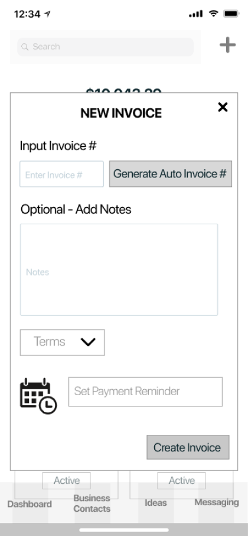
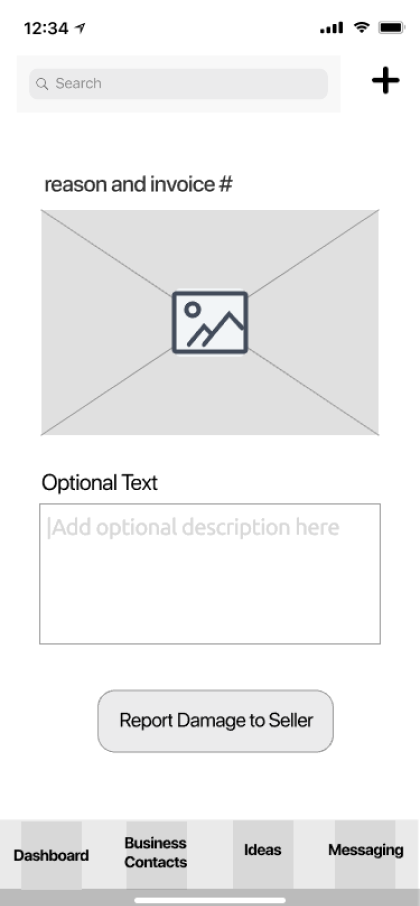

overview
Roles:
UX/UI Research & Design, Branding, Copy
Time:
8 weeks
Tools:
Sketch, Invision Studio & App, Figma
Deliverables:
Competitive Analysis, User Surveys, Personas, User Stories & Flows, Content Strategy, Copy, Wireframes, Prototyping, Preference Testing, Branding, UI
The problem
Business owners struggle every day to multitask between supplier relations, customer care, buying, quality control, and more.
There is always something that needs their immediate attention.

The product
OCTA was designed to meet the unique needs of these business owners.
Originally conceived as a Cloud app, comprehensive user research led OCTA to evolve into an app that helps people run the hardest parts of their business better.
my design process
The competition
Google Drive, Camcard, and Neat are all cloud applications that business owners use to organize different aspects of their business. Google Drive is an “all-in-one”, Camcard stores business contacts and posts news and updates, and Neat helps organize documents for accounting and tax time. I look never look to compete directly with any of the competitors. I look to create our own unique value by learning what these companies are doing right and what’s missing from their products for my audience.
View SWOT AnalysisUser surveys
I interviewed a total of 20 potential users for OCTA. There were 12 retailers and eight wholesalers. 40% of survey particiants were between the age of 35-44. 33.3% were between the ages of 45-54, the remaining 26.7% were between the ages of 55-64. I asked them questions to learn about the tools they were currently using, what they felt was missing from these products, and what they liked best about them. I was able to add some more products to my list for a further competitive analysis, like Dropbox, Pinterest, iCloud, and Instagram. I asked them how much they’re paying for these products. I also wanted to understand how they prefer to be contacted for business purposes, so I could later design the best communication experience between retailer and supplier/wholesaler. The last aspect I focused on learning from my survey participants is how they usually order products. This helped me envision a way to improve transparency during creating a purchase order, and cut on shipping mistakes before they happen.
Take User SurveyUser personas
I created these user personas based on interviews with nine retailers and five wholesalers.

Jen
Retail | Age 44 | NJ
Jen is a retailer and serial entrepenuer. She is excessively organized and cares a lot about making her customers happy.
Kew
Wholesale | Age 52 | NY
Kew is a veteran wholesaler. He sells to independent retailers like Jen and small department stores.
Both Jen and Kew think they’re a LOT more technologically saavy than they really are. That solidified the need for OCTA to be very intuitive. I also planned for OCTA’s microcopy to provide a lot of positive reinforcement. Busy business owners using the app will feel that they are getting things done.
View PersonasUser stories
Items of high importance
As a retailer
- I want to be able to report damages directly to my seller
- I want to report shipping mistakes by referring to the invoice
- I want to generate invoices directly on site with images
- I want to record all business conversations for accountability
- I want to message multiple sellers at once to source an item
- I want to collaborate w/my supplier and share items to source
- I want to check sales history per SKU while ordering
As a wholesaler
- I want to learn how to source better products for my retailers
- I want to organize my business so I can focus on growing it
- I want to find more customers to sell my offerings to
User flows
ONBOARDING
I cancelled OCTA’s onboarding altogether after showing it to a senior design mentor. As intuitive as I created it, she taught me that the most intuitive onboarding is no onboarding at all.
SAVING AN ITEM
Research showed me what tools potential users are currently using for their business. I designed the original “Saving an Item” flow to pull data from Quickbooks, Google Drive, Excel, or Dropbox.
REPORTING A DAMAGE / SHIPPING MISTAKE
By searching for the invoice number and choosing a “reason for return” or “type of damage”, a user can report a shipping mistake of damage. I chose not to offer an open text field, which could be a platform for negative and emotional text that could potentially harm a business relationship.
GENERATING AN INVOICE ON SITE
Some companies reported having a number/letter system for their invoices. Some didn’t at all, and the process of creating one was distracting. Therefore, I designed an option to add a custom invoice number or generate a new one while creating an invoice.
MESSAGING / COMMUNICATION
The original user flow for messaging included the abiity to send voice messages, but that was dropped during the HIFI design. Voice messages would be both expensive for the app to store and counter-productive. Our users had reported “not being able to find or remember” where they communicated with each seller. Listening to multiple voice messages wouldn’t make that any easier.
View User FlowsContent Strategy

Positive images, copy and hierarchy were designed to help motivate a business owner to run their business more efficiently and build their own feelings of integrity. We plan to build our user’s trust by not over-promising anything, and by using a friendly yet responsible tone throughout all the content.
Read Content OutlineWireframes
OCTA was originally designed for iOS. While designing, I repeatedly referenced the Human Interface Guidelines and designed the screens to be equally accessible for both left and right handed users.
I asked the developer to be included in the wireframe testing, so I can get his insight and ideas on the design.


DASHBOARD / TAB BAR
- Notifications of return requests, payment reminders for invoices, new messages and replies
- After testing - Invoice link directly from tab bar
- Access business-specific information directly on business contact page


INVOICING
- Testing showed the need to clarify where an invoice is in it’s lifecycle. (Purchase order, Backorder, Packing list)
- Show outstanding amount in total and per invoice
- After testing - added shipping cell to clarify who pays & amount
Branding
MIND MAPPING
These mind maps are a combination of user research, observation, and empathy. Each direction of the app grew to another feature.

To name the app, I tried words for commerce in different ancient languages like Latin and Hebrew. I researched the origin of commerce and read up on the historical silk and spice trade routes. I played around with Greek Mythology and Atlas - with the idea that the app would take all the weight of running a business off our users shoulders.
MORE SKETCHING

Exploration of “Celll”, “Mercor”, “Mercator”, “tradR”
Exploration of acronyms: “OBE”, “IACC”, “OCTA”
MOODBOARD / LOGO

Busy business owners are used to using products like Dropbox, LinkedIn, Evernote, and Quickbooks for their business.
On the other hand, OCTA needed to stand out. I used a mixture of blues and greens to create a solid graident that gives OCTA a modern, professional and approachful personality.

Trying some different Octopus icons on the graident background gave me a better direction to push OCTA’s logomark back to B&W.
PREFERENCE TESTING - LOGO MARK
I conducted A/B testing on OCTA’s logo mark with 20 potential users. Since opinions were split exactly in half, I paid closer attention the the reasoning behind each one’s choice. The testers that liked the closed logo mark said things like, “It’s more clear/complete/defined”. The testers that liked the open mark better said it looked more “modern, compelling, and professional. Since OCTA is an app looking to modernize the way business owners work, we stuck with the open mark.
PREFERENCE TESTING - BUTTONS
Most users chose the darker blue button for readability, and the rounder shape of the gradient button. Thet all loved the gradient. During the HIFI design, I found other ways to incorporate the gradient that did not compromise on readability and function.
View Style GuideHIFI Design

DASHBOARD
When a user first signs up for OCTA, the dashboard will explain what it will display after they plug in their info and start using the app. It will later become a home for notifications that show a user what is going on in their business. When they’re all caught up with notifications, the screen reverts back to a revolving set of business quotes designed to delight a user and motivate them to sign off and work on their physical business.


CREDIT REMINDERS
Multiple users expressed frustration with forgetting credits they had with their wholesalers. When a user creates an invoice and chooses a supplier, a credit reminder will pop up and offer to automatically deduct it from their current purchase order.

UI COMPONENTS
Color, type, and custom iconography further communicate with OCTA’s users. Microcopy further enhances usability & communication


TICS
I replaced drop down menus with tics. This achieved more screen space and less buttons

BUTONS
Too many confusing buttons were replaced by text for better usability. Boxed-in placeholders were replaced by open space.

STYLING
Icons, buttons, and colors remain consistent throughout the app.
What I Learned
If I were to start this project over, I probably would design OCTA to be less mobile-specific and more operating system agnostic. I was very focused on giving the user the ability to create invoices and report damages using their phone’s camera, and I didn’t take enough time to research other ways I can achieve that. I’d like to update the design based on development and usage discovery.
After my research and design was complete, the developer and I opted to switch OCTA from a mobile app to a progressive web app. The developer will still style the app with my iOS-like design, but it will work across mobile and other devices as a PWA.
Based on the observations and user research I did, we suspect that our wholesale users will use the mobile version a lot less, which is what prompted our late decision to build OCTA as a PWA. The basic version of the wholesale-side will be free. We want to encourage wholesalers to connect with their retailers through the app. We plan on showing OCTA to wholesalers at trade shows to spread the word. Once we have a large data-base, we can offer a paid version of the program to wholesalers that helps them grow their business by finding more customers.
It’s been a pleasure working on OCTA. I learned a lot about what it’s like to own and run a business. I look forward to helping further!